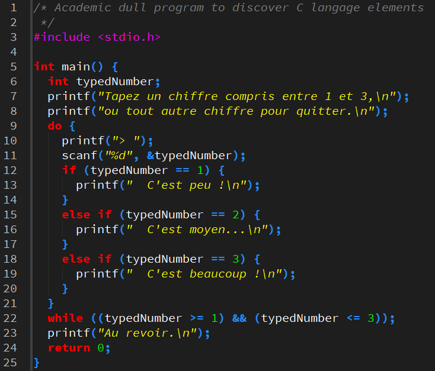
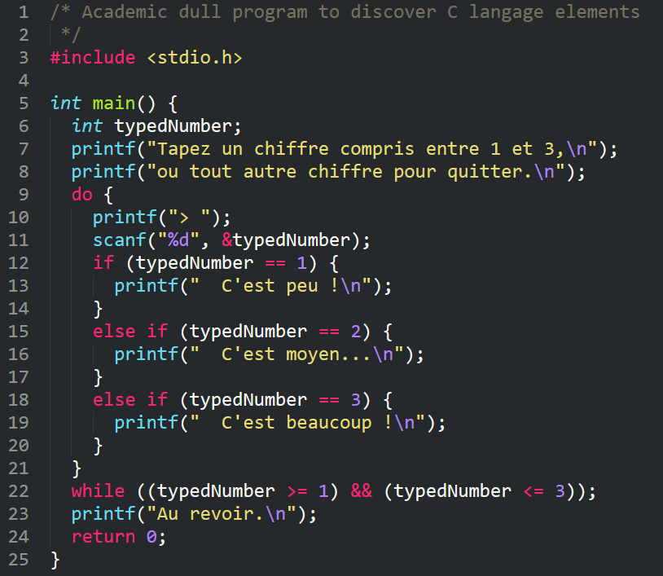

On a vu dès le chapitre C1‑I que la lisibilité des programmes est un enjeu décisif du génie logiciel – cf. le livre Clean Code: a handbook of agile software craftsmanship qui est entièrement consacré à cette question, et dont il existe une version française (Coder proprement). Le respect de l'exigence de lisibilité du code tient avant tout à l'observance de bonnes pratiques générales, certaines ayant déjà été proposées dans divers chapitres de cette partie C2 du cours, par exemple au chap. C2‑III pour la déclaration des constantes .
Mais ce qu'on appelle « bonne pratique » peut varier d'une période, d'un langage ou d'un contexte professionnel à l'autre (entreprise, laboratoire de recherche, équipe…). Très souvent, un chef de projet informatique impose à son équipe de développement une convention de codage W, c'est‑à‑dire un ensemble de règles et de recommandations à respecter, pour notamment :
- prévenir des erreurs classiques grâce à des obligations et des interdictions formelles (par exemple, pas de
goto…) ; - garantir l'homogénéité du code, dont la production est nécessairement répartie entre plusieurs codeurs, et ainsi faciliter sa relecture ainsi que la coordination du projet.
Néanmoins, pour un codeur débutant à qui l'on demande de composer des programmes courts et très simples comme ceux des premiers exercices et travaux pratiques de ce module de formation, il est difficile de comprendre l'importance des conventions de codage. Souvent perçues comme inutilement contraignantes, ces dernières semblent pénaliser l'effort intellectuel nécessaire pour concevoir les solutions aux problèmes posés.
Il faut pourtant y accorder la plus grande attention pour adopter dès le début de bonnes habitudes. Elles prendront tout leur sens au fur et à mesure de l'apprentissage individuel (ne serait‑ce que pour pouvoir relire son propre code plus facilement) puis dans le cadre d'un travail d'équipe.
Sans prétention d'exhaustivité, les recommandations de ce chapitre se concentrent sur les premiers détails auquel tout codeur est confronté au début de son apprentissage :
- choisir des identificateurs de données ou de fonctions,
- rédiger des commentaires,
- indenter et espacer les éléments de code…
D'autres aspects importants pour la lisibilité – la décomposition en fonctions, le choix des algorithmes et des structures de données – seront abordés au fur et à mesure des chapitres, avec un repérage explicite, comme cela a déjà été fait dans les chapitres précédents.
Pour une présentation plus détaillée, on pourra consulter le guide rédigé et gratuitement distribué par l'ANSSI (Agence nationale de la sécurité des systèmes d'information W), en gardant toutefois à l'esprit qu'en matière de bonnes pratiques, personne ne détient de vérité absolue – même une agence nationale.
Les identificateurs
Pour tous les identificateurs choisis par le codeur (noms de variables, types, classes, fonctions…), trois règles simples sont à observer :
- n'employer que l'anglais ;
- choisir des noms explicites ;
- adopter une convention typographie usuelle.
Ces règles sont respectivement détaillées dans les trois sections ci‑après.
Tout en anglais
Dans un code source, le recours exclusif à l'anglais (GB ou US) pour nommer les identificateurs présente plusieurs avantages décisifs sur toute autre langue.
Ces avantages sont :
- l'homogénéité linguistique, car tous les mots‑clefs, les noms de types et les identificateurs de fonctions standards sont déjà issus de l'anglais ; si le codeur forme aussi ses identificateurs en anglais, le code peut former des instructions très semblables à des phrases dans cette langue.
- la concision des termes car les mots dans d'autres langues – notamment en français – sont en moyenne plus longs que leurs équivalents anglais ;
- l'absence de caractères spécifiques (lettres accentuées, etc.) qui sont non conformes aux restrictions de codage des identificateurs ; avec une langue assez accentuée comme le français, on risque des confusions ;
-
precedentpeut être interprété de deux façons, soit comme « précédent » (adjectif), soit comme « précèdent » (forme conjuguée) ; - idem pour
affichequ'on peut interpréter comme « affiché » (participe passé) ou « affiche » (nom). - l'universalité linguistique dans le cadre d'équipes internationales de développement, où tout le monde parle anglais – ce qui est rarement le cas pour d'autres langues.
Le code :
while (randomNumber == previousDisplayedNumber) {…
se lit presque mot‑à‑mot :
« While the random number equals the previous displayed number… »
L'identificateur français nombreAleatoire fait 3 lettres de plus que son équivalent anglais randomNumber. Cette différence de longueur de 25 % n'est pas négligeable. Elle devient sensible dès qu'on emploit l'identificateur dans une expression un tant soit peu élaborée, au point de nécessiter parfois des sauts de lignes indésirables.
Dans l'identificateur français precedentNombreAffiche :
Des identificateurs explicites
En règle générale, tout identificateur doit préciser en lui‑même le rôle de l'objet qu'il désigne.
La précision avec laquelle un identificateur décrit son objet doit être :
- suffisante pour rendre intelligibles le sens des instructions dès leur première lecture ; les abréviations et les sigles (sauf ceux de la langue technique courante comme, par exemple
rpm,mph,pwm, etc.) sont à éviter ; - les identificateurs
b,pboupush_bsont à bannir car ce sont abréviations non universelles, donc pas claires ; - les identificateurs
buttonoupushButtonne sont pas assez explicites, car ils omettent de préciser que l'objet désigné est une broche – aspect matériel très important ; -
buttonPinoupushButtonPinconviennent, le premier ayant l'avantage de la concision, son manque de précision n'ayant pas d'impact si le type du bouton (poussoir, tournant, tactile, etc.) n'est pas déterminant pour la compréhension du code. - mais pas excessive, car plus les identificateurs sont longs, plus les instructions sont pénibles à lire et même à formater (on est amené parfois à devoir insérer des saut de lignes indésirables).
- Dans l'exemple précédent,
buttonPinNumberest plus précis mais alourdit considérablement et, à bien y réfléchir, inutilement l'identificateur. - Une instruction comme :
-
pulseWidthModulationà la place depwm, -
negativeChannelMetalOxydeSemiconductorà la place denmos.
Pour désigner le numéro de broche en entrée d'une carte à microcontrôleur à laquelle un bouton‑poussoir est relié :
pushButtonState, alors on se poserait la question : que représente pushButton ? analogWriteFrequency(nmosTransistorGatePin, pwmFrequency);
Dans la pratique, on observe dans du code professionnel des exceptions à la règle supra. En particulier, pour les variables d'itération de boucles for, dont l'usage est tellement familier, un identificateur consituté d'une seule lettre générale comme i peut suffire. Par exemple, on peut coder :
for (int i = 1; i <= 10; i++) {…
en pensant raisonnablement que cette ligne de code ne présente aucune difficulté de compréhension.
Néanmoins, si le bloc de la boucle for est complexe, il est alors préférable d'employer un identificateur plus explicite pour la variable d'itération. Par exemple, on peut choisir pin ou pinNumber si l'itération porte sur des numéros de broche d'une carte électronique.
Une typographie optimisée
Usage du tiret‑bas
En langages C et C++, le tiret‑bas _ est le seul caractère symbolique autorisé dans les identificateurs. Il est tentant de l'employer pour simuler un espace et ainsi former des identificateurs composés de plusieurs mots.
Cette pratique porte le nom de snake case W.
Pour bien identifier la broche d'un bouton‑poussoir, on pourrait choisir push_button_pin
Toutefois, cette pratique présente l'inconvénient d'allonger les identificateurs.
Pour ne pas recourir au tiret‑bas, une solution typographique très répandue pour former un identificateur consiste à commencer chaque mot qui le compose par une lettre majuscule. Cette solution est appelée « camel case » W.
Mais le style camel case présente quelques subtilités. On ne met pas de majuscule :
- à la toute première lettre de l'identificateur si ce dernier désigne une donnée ou une fonction ; par convention, on emploie une majuscule initiale pour les identificateurs de types (cf. chap. C3‑I ) ;
- pour un mot juste après un groupe de majuscules (notamment un sigle).
Il est d'usage de donner presque le même identificateur pour désigner une variable d'un type défini par le codeur et ce type lui‑même, comme dans la déclaration :
DigitalSignal digitalSignal;
où digitalSignal (sans majuscule initiale) est une variable du type DigitalSignal (avec majuscule initiale), déclaré préalablement par typedef.
Dans l'identificateur de constante firstLEDpin, le mot pin n'a pas de majuscule puisque la lettre qui le précède est elle‑même une majuscule ; en effet, l'identificateur firstLEDPin serait un peu moins lisible.
- Le style camel case est bien celle employée pour les identificateurs du framework Arduino, avec
pinMode,digitalWrite,delayMicrosecond, etc. - La règle qui consiste à ne jamais employer une majuscule initiale pour un identificateur de donnée prime sur toute autre règle, en particulier sur la règle typographique générale qui impose d'employer des majuscules pour les sigles. En effet, la présence d'une majuscule initiale est automatiquement détectée par de nombreux éditeurs de code, qui assimilent alors l'identificateur à celui d'un type ou d'une classe et lui confère alors le style spécifique de cette catégorie syntaxique (selon les réglages choisis).
- La ligne n° 10 ne pose pas de problème puisque
ledPinest bien détecté comme une identificateur de donnée. - En revanche, à la ligne n° 11, à cause de la majuscule initiale,
LEDpinest détecté comme un identificateur de type, et affiché enitalique vert, comme le descripteurint, ce qui n'est pas satisfaisant.
run_prettify de Google sur les deux identificateurs déclarés ci‑dessous pour nommer le numéro d'une broche de carte à microcontrôleur à laquelle est reliée une LED (sigle anglais pour light emitting diod) : const int ledPin = 2; // OK const int LEDpin = 2; // NOT OK! Data identifier detected as a type name
Identificateurs en majuscules
Par convention, on met entièrement en majuscules les identificateurs des constantes déclarées et surtout des pseudo‑constantes (introduites par des macro‑définitions – cf. chap. C4‑III ).
Lorsqu'un identificateur entièrement en majuscules est composé de plusieurs mots, le tiret‑bas _ est alors bienvenu pour les séparer (snake case).
Cette convention permet de distinguer au premier coup d'œilles constantes des variables dans les données d'un code source.
Toutefois, pour les on peut y déroger pour les identificateurs longs, car s'ils sont mis entièrement en majuscules, ils ont tendance à obérer la visibilité du reste du code.
- Pour gérer les modes de marche et d'arrêt d'un système, il est préférable de définir des constantes explicites, plutôt que d'employer directement les valeurs booléennes
0et1. On pourra ainsi coder : - Pour coder des numéros de première et dernière broches d'une série de led, on peut choisir des identificateurs tout en majuscules comme :
FIRST_LED_PINetLAST_LED_PIN
mais on peut aussi préférer une typographie un peu plus légère comme :
firstLEDpinetlastLEDpin.
const bool STOP = 0; const bool RUN = 1; bool mode = STOP;
0 signifie « arrêt » et 1 signifie « marche »). Ces identificateurs étant très courts, le fait de les coder en majuscules n'alourdit pas le code tout en les rendant faciles à repérer. Les conventions d'emploi des majuscules et de la typographie snake case pour les identificateurs de constantes sont bien celles employées dans le framework Arduino : souvenons‑nous de LOW, HIGH, INPUT, INPUT_PULLUP, LED_BUILTIN, etc. (cf. chap. C2‑VII ).
Les commentaires
Parce qu'il ne sont pas du code et qu'ils sont potentiellement très divers, les commentaires ne peuvent pas faire l'objet de règles aussi précises que celles énoncées pour les identificateurs. Mais on peut aborder cet aspect de la programmation à travers un questionnement analytique classique : Pourquoi ? Où ? Comment ?
Pourquoi ?
La principale fonction d'un commentaire est de fournir aux lecteurs du code source une explication complémentaire au sens directement intelligible de la lecture d'un élément de code.
Mais si les identificateurs sont bien choisis, alors les éléments de code doivent en principe se comprendre à leur simple lecture. On dit que l'on produit un code auto‑documenté ; les commentaires sont alors superflus.
Cette mise en perspective est essentielle pour déterminer la quantité et le niveau de détail requis des commentaires afin qu'ils jouent pleinement leur rôle, mais sans excès. En effet, rédiger des commentaires :
- demande du temps (y compris durant la maintenance du code) qui ne doit pas augmenter démesurément celui qui est consacré au codage proprement dit ;
- occupe dans les fichiers un espace qui ne doit pas nuire à la lisibilité du code.
Donc, sauf dans un contexte pédagogique, il n'est pas question d'expliquer le rôle de chaque instruction. On suppose que tout lecteur potentiel, y compris un chef de projet, a suffisamment de compétences pour comprendre l'essentiel du code. On veillera donc à commenter le moins possible, c'est‑à‑dire presque jamais !
En pratique, on ajoutera des commentaires pour préciser ponctuellement :
- les unités des valeurs numériques lorsqu'elles ne sont pas évidentes ;
- les calculs complexes pour lesquels une brève explication ou une confirmation facilite la lecture du code ;
- les précautions à prendre, notamment en vue d'éventuelles futures modifications du programme ;
- et aussi le sens de tout élément de code contre‑intuitif.
Dans les programmes pour carte à microcontrôleur, on emploie généralement deux unités de temps, la milliseconde ou la microseconde. Lorsqu'on déclare une donnée temporelle, il faut indiquer l'unité qui est implicitement choisie, comme par exemple dans le commentaire de fin de ligne ci‑dessous :
const int cycleDuration = 20000; // microseconds
En effet, l'interprétation de la valeur de cette variable ne peut se faire qu'à la lecture des expressions qui l'utilisent (comme par exemple un appel de la fonction delayMicroseconds), et qui peut être codées bien plus loin dans le fichier.
Dans les programmes pour carte à microcontrôleur, lorsqu'on emploie un capteur, on effectue des calculs spécifiques à ce dernier (on applique sa fonction de transfert). Il faut brièvement expliquer le principe du calculs, comme par exemple dans le commentaire préalable ci‑dessous :
// current sensor : 0.1 V/A arround 2.5 V batteryDischargeAmp = (2.5 - (analogRead(ampSensorPin) * 2.5 / 1024.0)) / 0.1;
Dans les programmes pour carte à microcontrôleur, on est parfois amené à ajouter ultérieurement des composants, et donc à éventuellement devoir modifier le câblage. Si le bon fonctionnement du programme repose sur des particularités d'attribution des numéros de broches, il est important de le préciser, comme en ligne nº 10 ci‑dessous :
// light pins must be consecutive
const int greenLightPin = 2;
const int yellowLightPin = 3;
const int redLightPin = 4;
void setup() {
for (int pin = greenLightPin; pin <= redLightPin; pin++) {
pinMode(pin, OUTPUT);
digitalWrite(pin, LOW);
}
}
En effet, si l'on devait utiliser la broche nº 3 pour une autre emploi et déplacer l'entrée yellowLightPin sur une autre broche, la boucle for telle qu'elle est codée en ligne nº 7 ci‑dessus ne produirait plus une exécution satisfaisante.
On a vu au chapitre C2‑VIII qu'il était opportun de rajouter une pause artificielle (appel de la fonction delay) pour fluidifier la simulation d'un programme Arduino dans l'environnement Tinkercad.
Dans un programme qui se veut réactif, donc où le recours à une fonction comme delay est a priori « proscrit », le rôle spécifique de cette pause artificielle doit être précisé, comme par exemple ci‑dessous :
delay(10); // only for a quicker Tinkercad simulation
Ainsi, tout lecteur du code comprend immédiatement que cette pause peut être supprimée ou mise en commentaire dans un contexte d'exécution sur une vraie carte.
Il faut avoir conscience que, dans un programme, si l'on doit ajouter beaucoup de commentaires (pour toutes les raisons que l'on vient indiquer), cela doit aussi amener à éventuellement s'interroger sur les choix algorithmiques…
Où ?
En principe, un commentaire peut être inséré dans le code partout où un espace peut l'être. Mais pour une bonne lisibilité, on doit surtout ne jamais couper les instructions.
Il faut donc placer les commentaires autour des instruction. Diverses possibilités existent, leur choix dépend de la nature des commentaires et de circonstances particulières comme la longueur des instructions.
- Les premières lignes du fichier sont toujours réservées à l'en‑tête descriptif du programme, qui doit impérativement préciser toutes les données nécessaires à la compréhension globale du code : objet, matériel mis en œuvre, algorithme, version, etc.
- Une ligne au dessus ou dessous d'une fonction, d'un bloc ou même d'un groupe d'instructions peut être employée pour en décrire l'objectif ou se repérer au premier d'œil dans le code.
- Une fin de ligne est aussi un bon emplacement pour un commentaire ponctuel relatif à une instruction ; si la ligne de code est longue, on peut placer le commentaire au dessus ou au dessous, en dernier recours.
Dans un programme pour carte Arduino de commande d'une led par un bouton, on pourrait saisir l'en‑tête suivant :
/* * * * * * * * * * LED-BUTTON COMMAND PROGRAM * * * * * * * * * * * BOARD: any Arduino board * LED: builtin LED * BUTTON: push button on D8 pin with pull-down 2k resistor (positive logic) * COMMAND: on/off LED on rising edge of push button signal */
Dans un programme pour carte Arduino de compte à rebours où la fonction loop s'étend sur une soixantaine de lignes, ce qui peut dépasser la capacité d'affichage vertical d'un moniteur, et donc compromettre la vision d'ensemble nécessaire à sa compréhension.
Une ligne de commentaires au dessus de chaque bloc est alors bien utile pour en préciser le rôle, comme par exemple ci‑dessous.
// state changes
if (mode == WORK) {
if (risingEdge(startStopButtonSignal)) {
state = State (!bool(state));
}
if (remainingSeconds == 0) {
state = STOP;
}
}
Dans le même programme de compte à rebours, on apporte en fin de ligne nº 50 une précision sur l'usage du type de données.
enum Mode : uint8_t {WORK, SET};
enum State : uint8_t {STOP, RUN}; // in mode WORK only
Le lecteur peut alors comprendre sans peine que les valeurs STOP et RUN ne sont valables que lorsque le système est dans le mode WORK.
Quand ?
Dans la pratique, commenter le code est vu au mieux comme une corvée nécessaire, au pire une activité nuisible à la concentration qui est requise pour le codage proprement dit.
Lors de la mise au point d'un programme, alors qu'on ne cesse de changer ses instructions, on se demande bien à quoi bon commenter, s'il faut ensuite perdre du temps à tout effacer. Procrastiner (remettre au lendemain ce qu'on devrait faire le jour même) est un défaut banal, surtout si l'on a le commentaire bavard…
Mais si l'on adopte les bonnes pratiques permettant de commenter très peu, alors il n'y a pas d'obstacle à commenter immédiatement ce qui doit l'être.
Le risque de ne pas le faire tout de suite, c'est d'oublier ensuite l'intuition qui a fait sentir une difficulté méritant d'être signalée, et d'être soi‑même confronté à nouveau à cette difficulté quelques heures ou quelques jours plus tard.
Comment ?
Comme les identifiants, il est préférable d'exprimer les commentaires tout en anglais, et ce même si l'éditeur de code est paramétré pour afficher les caractères accentués.
Certes, cela demande quelques compétences, mais l'acquisition du vocabulaire spécifique nécessaire à la rédaction des commentaires est un investissement intellectuel qui finit par payer.
C'est par de tels efforts réguliers que peu à peu, on arrive aussi à mieux comprendre la documentation technique des bibliothèques de fonctions ou les débats publiés sur des forums incontournables en programmation comme Stack Overflow W.
Le format du code
On a vu au chapitre C2‑II qu'en langages C/C++, le code source est dit à format libre : sauf dans les éléments de code atomiques, on peut ajouter partout autant de séparateurs blancs que l'on souhaite.
Il en résulte qu'il n'y a pas de contraintes strictes de position où placer les instructions dans les blocs, ni des atomes et symboles dans les expressions.
Pourtant, l'exigence de lisibilité veut que l'on respecte quand même des conventions de formatage, certaines étant universellement adoptées à quelques variantes près, d'autres pouvant être très souples.
Comme pour les commentaires, il est vivement recommandé de formater le code dès la saisie, et en tout premier lieu l'indentation, qui en révèle la structure. Sinon, le codeur risque de perdre lui‑même beaucoup de temps lors du codage pour se repérer dans la hiérarchie des blocs.
Alignement et indentation
Un éditeur de code affiche toujours les caractères d'un fichier source alignés à gauche (conformément au sens d'écriture des langues occidentales).
De plus, il emploie toujours par défaut une police de caractères à chasse fixe – la chasse étant (approximativement) la largeur des caractères W.
Contrairement à une police dite « proportionnelle » comme Cambria (cf. ci‑contre), une police à chasse fixe comme Consolas, Courrier new, Source Code Pro, etc. permet une indentation régulière des lignes de code, c'est‑à‑dire un décalage horizontal vers la droite du début de l'instruction d'un ou plusieurs caractères espace ou mieux, de tabulation.
Partant du principe général qu'on saisit une ligne de code par instruction simple (ou par directive), l'indentation évolue au fur et à mesure des instructions selon les structures de contrôles employées :
- l'indentation est augmentée à chaque « entrée » dans un bloc et diminuée d'autant à chaque « sortie » de bloc ; toutes les lignes du bloc ayant la même indentation, elles sont donc alignées verticalement, à gauche) ;
- quant aux accolades de blocs, elles peuvent être positionnées de deux manières :
- soit l'une et l'autre en début de ligne, afin qu'elles soient alignées verticalement,
- soit l'accolade ouvrante
{en fin de ligne et l'accolade fermante}en fin de ligne, alignée avec le mot-clef de la structure de contrôle.
Ces bonnes pratiques permettent de repérer au premier coup d'œil, par l'alignement des lignes de code, les blocs des structures de contrôle.
Pour formater le code générique d'une boucle while imbriquée dans un test if… else, les deux variantes ci‑dessous sont usuelles, celle de droite étant un peu plus compacte, mais moins aérée que celle de gauche.
if (condition) { instruction; ⫶ while (condition) { instruction; ⫶ instruction; } instruction; } else { instruction; ⫶ instruction; }
if (condition) { instruction; ⫶ while (condition) { instruction; ⫶ instruction; } instruction; } else { instruction; ⫶ instruction; }
Emploi de la touche tabulations
Pour maîtriser la régularité de l'indentation, on peut recourir à la touche de tabulation horizontale TAB qui, en principe, insère dans le texte à chaque appui un caractère HT (horizontal tabulation, code ASCII 0x09).
Avec la plupart des éditeurs de code, en sélectionnant un groupe de lignes de code, on peut le décaler d'une tabulation :
- vers la droite en appuyant sur la touche TAB ;
- vers la gauche en appuyant simultanément sur les touches ⇧TAB ;
De plus, la plupart des éditeurs de code possèdent une fonction d'auto-indentation d'une partie de code sélectionnée.
Dans Sublime Text, on trouve ces fonctionnalités (et bien d'autres) via le menu Edit/Line (cf. la figure ci‑contre).
Valeur de l'unité d'indentation
Sur la plupart des éditeurs de code, il est possible de régler la taille de la tabulation en nombre de caractères espaces équivalents :
- une grande valeur – typiquement 4 espaces, voire plus – met bien en évidence l'imbrication des blocs mais elle consomme davantage la largeur de ligne disponible qui est limitée par celle de la fenêtre d'affichage, et en définitive, par celle du moniteur ;
- aussi, pour éviter les débordements de la fenêtre ou les retours à la ligne intempestifs, il est préférable de choisir une petite valeur en fixant la tabulation à 2 espaces seulement ; c'est valeur minimale recommandée car en dessous, l'indentation étant à peine visible, elle ne remplit plus sa fonction.
De plus, il est également possible de convertir automatiquement dans le fichier source tous les espaces en tabulations, et vice‑versa.
Sur Sublime Text, on accède à ces réglages et fonctionnalités via le menu View/Indentation, ou encore en cliquant sur la zone Tab Size dans la barre d'état tout en bas de la fenêtre pour faire apparaître un menu déroulant et choisir la valeur d'une tabulation (cf. la figure ci‑contre).
Reprenons l'exemple ci‑dessous et comparons le code générique indenté par tabulations de deux espaces (code de gauche) et quatre espaces (code de droite) :
if (condition) { instruction; ⫶ while (condition) { instruction; ⫶ instruction; } instruction; }
if (condition) { instruction; ⫶ while (condition) { instruction; ⫶ instruction; } instruction; }
Aération horizontale et verticale
À l'exception des codes composés en réponse à des petits exercices académiques, les programmes sources deviennent vite très complexes. Leur lecture peut devenir très pénible s'ils sont présentés de façon trop compacte.
L'aération du code est nécessaire autant horizontalement que verticalement.
Aération horizontale
Il est recommandé d'insérer des caractères espaces :
- entre les opérateurs et les opérandes,
- entre les mots‑clefs, les délimiteurs et les expressions.
Mais comme il n'y aucune règle obligatoire, contrairement à la typographie, les usages sont divers et difficiles à décrire. Tout est une question de dosage ; il y a aussi une part d'habitudes et de subjectivité.
On se contentera donc ici de donner un exemple sans et avec aération, voire trop, pour comparer.
L'exemple est issu du programme réactif de clignotement de la led intégrée à une carte Arduino, présenté au chapitre C2‑VIII .
- L'instruction sans aucune aération comme ci‑dessous :
if(millis()-previousMillis>=blinkHalfPeriod){ previousMillis+=blinkHalfPeriod; digitalWrite(LED_BUILTIN,!digitalRead(LED_BUILTIN)); }est pénible à lire, même avec la coloration syntaxique, car l'œil a du mal à repérer les opérateurs perdus au milieu des identificateurs (avec la fatigue, on pourrait facilement manquer le symbole+accolé à=pour former l'opérateur d'incrémentation+=qui est ici essentiel). - La même instruction modérément aérée comme ci‑dessous :
if (millis() - previousMillis >= blinkHalfPeriod) { previousMillis += blinkHalfPeriod; digitalWrite(LED_BUILTIN, !digitalRead(LED_BUILTIN)); }est bien plus facile à lire (la composition des expressions se détache mieux), d'autant plus que les espaces ajoutés reprennent en partie les règles typographiques usuelles (un espace après,mais pas avant, etc.). - Enfin, la même instruction trop aérée comme ci‑dessous :
if ( millis () - previousMillis >= blinkHalfPeriod ) { previousMillis += blinkHalfPeriod ; digitalWrite ( LED_BUILTIN , ! digitalRead ( LED_BUILTIN ) ) ; }est moins lisible que dans le format précédent. Elle « consomme » trop d'espace et détache des éléments qui sont usuellement liés, en particulier les parenthèses d'arguments des appels de fonctions.
Aération verticale
Il est recommandé d'insérer un voire plusieurs sauts de ligne pour mieux détacher verticalement :
- les blocs de définition des différentes fonctions,
- les déclarations des instructions proprement dites,
- et plus généralement tous les groupes d'instructions (même si elles ne forment pas nécessairement un bloc) qui implémentent à elles‑seules un sous‑algorithme du programme.
De plus, l'ajout d'une dizaine de sauts de lignes entre les grandes parties d'un programme permet de repérer facilement ces dernières dans l'image miniature du fichier que génère certains nombreux éditeurs de code.
Soulignons que dans tous les cas, la taille d'un fichier source importe peu en termes de mémoire et d'affichage. En effet, même dans le cas d'un gros logiciel, la programmation modulaire permet de modérer la taille des fichiers. En principe, la doubler avec les espacements ne pose pas de problème.
Ce qui compte, c'est de pouvoir visualiser facilement sur un écran ou une feuille imprimée les unités principales du programme (fonctions, blocs, etc.) – qu'on s'efforce d'ailleurs de rendre les plus simples et courtes possible pour mieux les comprendre.
Là encore, tout est une question de mesure et d'habitudes.
Considérons le programme académique ci‑dessous qui calcule le nombre de jours dans un mois de l'année, en tenant compte du fait que cette dernière est bissextile ou non (certaines parties du code ont déjà été données en exemples au chap. C2‑V ).
/* Program that calculate the number of days in the month of a given date
*/
#include <stdio.h>
#include <stdbool.h>
int main(void) {
printf("Type a date with format mm/yyyy (mm = 0 to quit)\n");
int month = 0, year = 0;
while (true) {
int daysInMonth = 0;
bool leapYear = false;
// scan and check the date typed by the user
printf("> ");
scanf(" %d/%d", &month, &year);
if (month == 0) break;
if (month < 0 || month > 12) {
printf("Month is out of range!\n");
continue;
}
// check if the year is a leap year
if ((year % 4 == 0 && year % 100 != 0) || year % 400 == 0) {
leapYear = true;
}
else {
leapYear = false;
}
// calculate and display the number of days in the month
switch (month) {
case 2 : // february
if (leapYear) {
daysInMonth = 29;
}
else {
daysInMonth = 28;
}
break;
case 4 : case 6 : case 9 : case 11 :
daysInMonth = 30;
break;
default :
daysInMonth = 31;
}
printf("Number of days in the month: %d\n\n", daysInMonth);
} // while(true)
printf("Goodbye.\n");
return 0;
}
En plus des lignes de commentaires, on a ajouté des sauts de ligne – cf. les lignes nº 9, 10, 14, 23, 31, 50 et 51 – pour mieux séparer les différentes parties du code, ce qui améliore sa lisibilité.
Pour séparer différentes parties du code, il serait tentant d'utiliser des lignes de commentaires du genre :
//================================
Pourtant, cette pratique présente des inconvénients :
- il est difficile de leur donner une longueur identique d'une ligne à l'autre, sauf à y consacrer une attention fastidieuse (au détriment du codage) ;
- elles prennent plus de temps à saisir et effacer que de simples sauts de ligne.
Coloration syntaxique
La coloration syntaxique W (syntaxt highlighting) consiste à afficher le code source en employant des couleurs et des styles (gras, italique…) par catégories syntaxiques : mots‑clefs, descripteurs de types, opérateurs, etc.
Aujourd'hui, tous les éditeurs de code proposent cette fonctionnalité, car elle améliore considérablement la lisibilité du code. Il serait dommage de ne pas se l'approprier ! Car même si ce n'est pas toujours aisé pour un débutant, la mise en forme du code est paramétrable.
On pourrait penser que les choix en matière de coloration syntaxique sont une affaire de goûts personnels, mais on peut néanmoins énoncer quelques principes de bon sens, au regard de la hiérarchie des catégories syntaxiques du langage et des caractéristiques de l'œil humain (mais en gardant à l'esprit que ces règles sont subjectives, comme les précédentes).
- Pour diminuer la fatigue, on privilégie un
arrière‑plan sombre(on parle de dark mode), noir ou du moins très foncé, car plus l'arrière plan est proche du gris moyen, plus il écrase le contraste avec le texte et rend la lecture pénible à la longue. - Pour tous les éléments structurels qui articulent le code, le style
grasaide à renforcer la perception ; de plus, il est opportun de choisir des couleurs primaires, vives, qui attirent l'attention et qui contrastent bien entre elles ; par exemple :- les mots‑clefs en
rouge, - les séparateurs et délimiteurs en
bleu.
- les mots‑clefs en
- Pour les opérateurs qui sont, comme les délimiteurs et séparateurs, des symboles isolés, on peut choisir le même format
bleu, éventuellement avec une nuance de couleur. - Pour les descripteurs de types et leurs valeurs numériques associées, on peut choisir du
vert(c'est la troisième couleur primaire). - Enfin, pour les commentaires, on privilégie le style
italique, plus semblable à l'écriture manuscrite (donc d'apparence moins formelle que le code proprement dit), et dans une nuance de// grisqui apparaît moins vive que le code, mais qui contraste suffisamment avec l'arrière-plan pour rester lisible.
En définitive, cette combinaison de couleurs et de styles permet de gagner en lisibilité, tant sur moniteur que sur feuille imprimée, même en noir et blanc (les éditeurs de code permettent d'éliminer la couleur d'arrière plan lors d'une impression).
Les deux captures d'écran ci‑dessous montrent le même code source mis en forme par deux environnements :
- Avec l'IDE Code::Blocks, il est facile de paramétrer la coloration syntaxique conformément aux règles énoncées supra ; 
- Avec l'éditeur de code Sublime Text, la coloration syntaxique par défaut est déjà très convenable : 
Settings/Editor, on sélectionnne l'icône Syntax highliting dans le panneau latéral. Pour les catégories syntaxiques usuelles (Default, Comments, Keyword, etc.), on modifie les choix en sélectionnant les couleurs de premier plan (Foreground) et d'arrière‑plan (Background) via des fenêtres pop‑up usuelles. On peut aussi cocher des cases de styles (Bold, Italic…). Si l'on souhaite paramétrer cette coloration syntaxique d'une façon similaire à celle proposée supra, on peut utiliser le fichier DarkStudy.sublime-color-scheme au format json, téléchargeable ici . Il faut le placer dans le répertoire des préférences de l'utilisateur, typiquement sous Linux :
/home/user‑name/.config/sublime-text-3/Packages/User
ou sous Windows :
C:\Users\user‑name\AppData\Roaming\Sublime Text 3\Packages\User
Ensuite, il suffit de le sélectionner via le menu Preferences/Select Color Scheme. On obtient alors le résultat suivant :
Enfin, pour modifier ce fichier ou en créer un autre, il est préférable d'avoir installé l'extension Package Development (cf. chap. C1‑II ).